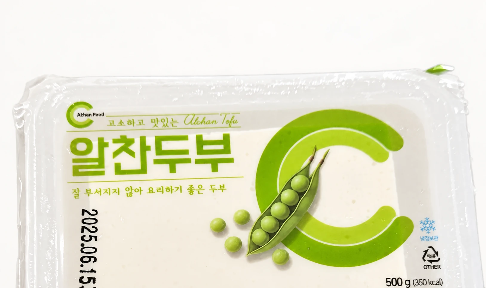

알찬두부
300g, 500g

부침이나 조림처럼 모양이 남아야 하는 요리에 쓰기 좋습니다. 콩가루(대두분)가 아닌 대두로 만듭니다.
원재료명 (알찬두부)
대두100%[외국산(미국, 중국, 캐나다 등)], 염화마그네슘, 황산칼슘, 혼합제제(규소수지, 폴리소르베이트65, 소르비탄지방산에스테르, 카복시메틸셀룰로스나트륨, 정제수), 혼합제제{트랜스글루타미나아제, 말토덱스트린(효소제)}, 대두 함유. 300g, 500g 포장 표시면 기준